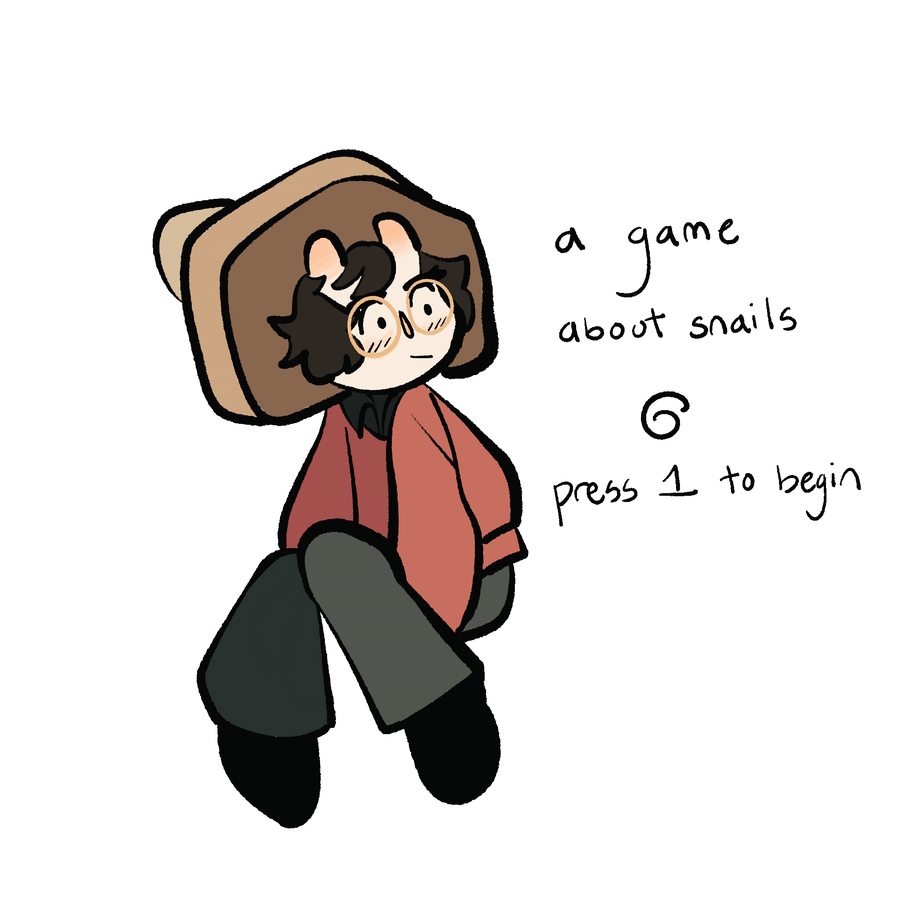

A Game About Snails
About:
A small JavaScript visual novel about snails and being true to
yourself.
Play the game
on my github
file under:
School assignment turned passion-project. This project is very personal to me.
Tools used:
Background music by
joshuuu
Sounds by
noahkuehne
Typeface is
Determination Mono Web
All other art and assets were hand-drawn by me using Procreate for
the iPad.
